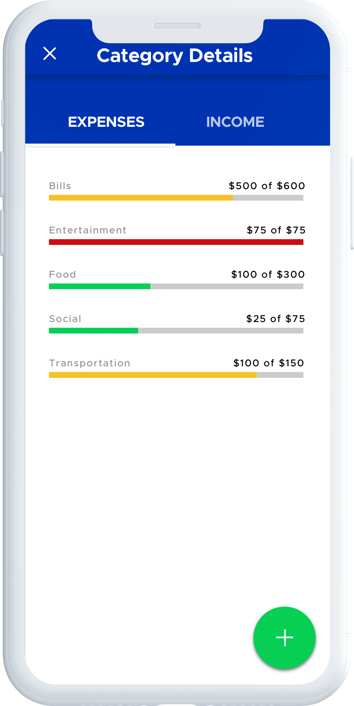
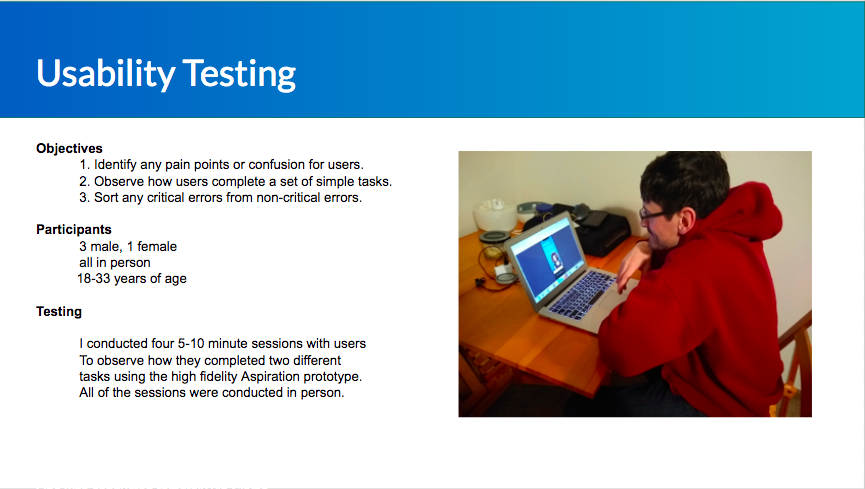
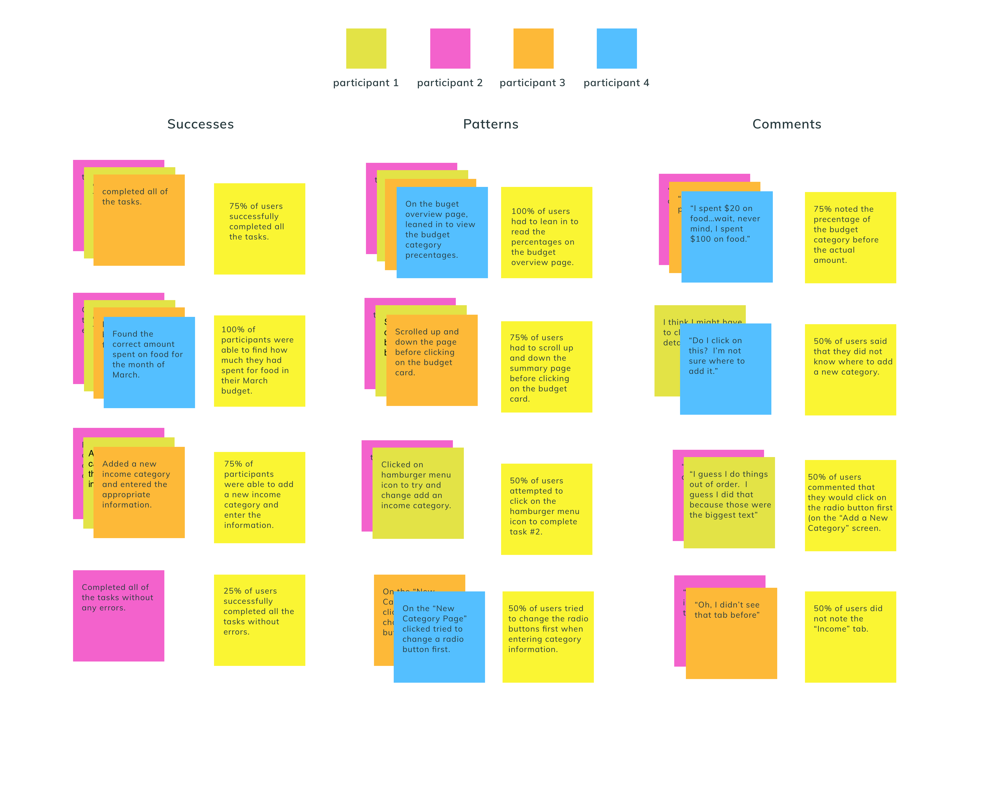

Chocolates Plus: A Sweet Treat
responsive design & branding
responsive design & branding


MY ROLE
User Research | Information Architecture | Interaction Design | Prototype and Testing | UI/Visual Design
TOOLS
Competitive Analysis | Market Research | User Interviews | Empathy Mapping | Personal Development | Site Map | User Flows | Wireframing | Affinity Mapping | Usability Testing | Style Guide | UI Kit Development | Hi-Fi Prototype
Timeline: 80 hours over 2 weeks
CHALLENGES
How might we make it easier for Chocolates Plus users to learn more about each product?
Chocolates Plus is a well-known confectionary in northern Minnesota, but website visitors can't browse or buy chocolate online. I needed to create a frictionless process to search and purchase items on an updated, responsive website.
ASSUMPTIONS
1. There is user interest in shopping for chocolate via an online website.
2. User flows found on other chocolate shop websites are similar to what users of Chocolate Plus need.
3. Users currently encounter painpoints when navigating Chocolate Plus’ website across different platforms.
SOLUTION
Through the use of secondary and market research, customer interviews, IA, and usability testing, I created a responsive site redesign that allows users to easily browse and purchase their favorite chocolate online.

RESEARCH
What are users needs and pain points related to purchasing chocolate?
I conducted market research and a competitive analysis to learn more about the market and potential users.
Currently, chocolate sales account for over 60% of sales in the candy industry. While confectionary stores make up only 5% of sales,
they are typically the purveyors of higher quality, niche products – which have been increasing
in popularity as well. Adults 45 and older have higher per capita consumption and trended up during the past five years.
competitive analysis
What does a potential user look like?
Using the insights from and the market research and competitive analysis, I created provisional personas
to help in preparing for user interviews.
INFO HERE
provisional personas

Opportunities for Growth
One major room for growth is education and awareness of FinTech services. In one survey, over half of non-users said that they were
aware of the availability of these services.
INFO HERE
User Interviews
To better understand the shopping experience from the user’s point of view, five interviews were conducted
in person with visitors to Chocolates Plus. Rapport was build with each participant and an
interview script was used for consistency.
RESEARCH SYNTHESIS
What do users need?
After the user interviews were finished, I sorted my notes using an empathy map to clarify exactly what
users were saying, thinking, feeling, and doing during their budgeting experiences. I looked for patterns
and noticed that a few key ideas emerged from the majority of the interviews:

User Persona
Using the insights and patterns collected from the empathy map, I created a user persona to understand
the major needs, goals, pain points, and motivations of the majority of users.
DEFINE & IDEATE
Now that I had discovered more about the user from research, it was time to begin brainstorming possible solutions. To help bridge the gap between stating the problems and identifying solutions, I created POV statements and HMW questions using the persona's needs, goals, and motivations. POVs and HMWs are useful tools to spark thinking on a broader scale about how to address the user's challenges.
POV and HMW statements
Group Facilitation and Brainstorming
I organized and led a group brainstorming session with 4 people who fit the demographic for users based on my earlier research. I described the HMW’s one by one and participants had five minutes per HMW to brainstorm on their own.
We went around the table and
each person shared their responses. At the end, group members had the opportunity to
share their opinions and insights about ideas that were shared, as well as build upon those ideas.
Key Takeaways:
-A visual icon or color could be used to indicate budget status
-users could send information between app an excel
-a text alert could remind the user when they are reaching a budget limit
STRATEGY
I wanted to make sure that I address the shared goals of the users and the business. The also thought about technical constraints of the project such as maintaining the current app's UI patterns and designing for iOS standards.
Business and User Goals
I also created a project roadmap using the pov's and input from the brainstorming sessions to prioritize possible design solutions and metrics for measuring feature effectiveness.
Product Roadmap
INFORMATION ARCHITECTURE
app map
I created an app map using the current structure of Aspiration's app to visualize how the new feature would integrate and connection into the current structure.
INTERACTION DESIGN
After creating the sitemap, I used a task flow and user flow to visualize the main steps and thought proccess of a user as they accomplish a task Aspiration's mobile app.
task flow
user flow
low-fi homepage wireframes
Now that the architecture had taken shape, I used sketching and wireframes to begin exploring how the interface would interact to create a visual focused experience for the users.
high fidelity wireframes
To prepare for an initial prototype, I used Sketch to created high fidelity wireframes of new feature integration.

INTERFACE DESIGN
Once the interaction wireframe sketches were completed, it was time to add color, typography, and interface elements that adhered to Aspiration's brand and provided visual hierarchy.
mood board
I used images, colors, and words to reiterate the look and feel of Aspiration's brand and explored the brand adjectives -reliable, honest, eco-conscious, fresh.

style tile
The style tile give an overview of how the typography, color palette, etc. will work together and at various sizes to convey Aspiration's brand.
UI kit
As Aspiration's brand evolves over time, a comprehensive UI kit will allow for consistent changes to the UI patterns.
PROTOTYPE AND TESTING
Usability Testing
I conducted in-person testing with four participants who fit the demographics and profile of a potential Aspiration user. Each participants was given two scenarios to consider with a task to accomplish. Each participant session was recorded and lasted approximately 10-15 minutes.

affinity map
After testing the prototype with users, I created an affinity map to sort, prioritize, and rank the user testing feedback. Insights from the affinity map helped to identify areas for iteration.

Recommendations
Based on insights from the testing, top priority recommendations included the following:
1. Increase the font-size of the category precentage breakdown.
2. Add "View Budget" label to the budget card.
3. Decrease the size of the radio buttons on the new category screen.
high-fidelity wireframe revisions and iteration
I revised the high-fidelity wireframes screen design based on recommendations from usability testing. If time allowed, I would iterate with another round of usability testing to look for further ways to improve to the user experience.
high-fidelity prototype with revisions
I created high-fidelity updates of the wireframe with the revised UI design. The prototype in InVision had clickable buttons and simulated page transitions and animations that roughly matched my experiential concepts of how the interaction would flow.
CLICK TO INTERACT
WHAT I LEARNED
Hindsight is 20/20...here are my takeaways from creating Aspiration's mobile budgeting feature.
Beware of Scope Creep
Remember the saying, "Don't bite off more than you can chew?" With the possibility for a variety
of features which could have solved the problems of this project, I realized halfway through that I was trying to do too much within
my alotted project timeline. I needed to narrow down the features to ones which provided the best solution based on research. Designers need to be not only pixel-perfect,
but pragmatic!
Benefits of Group Collaboration
I lead and facilitated a group brainstorming session for this project which generated a variety of creative and insightful
ideas that added a lot to the final prototype. Taking the time to properly introduce the project and what the expectations were allowed participants to feel safe to share and have
fun building upon one anoother's ideas. In addition, collaborating with my mentor has allowed me to sharpen my design thinking and process in ways that I would not have been able to have done alone.
Success and Challenges
Working with an existing brand was more enjoyable and freeing than I initially imagined! The contraints of Aspirations UI
and branding allowed me to sharpen my eye for visual design by digging deeper into existing design patterns. In addition,
I was able to spent more time conceptualizing and understanding how the interaction design would function instead of focusing too much
energy on the look of the UI.
The main difficulties with the project included lack of familiarity with the industry. I dove into the research portion of the projects
to learn about existing user needs within fincial management and found that there are a wealth of sub-genras that exist for students, investors, etc.
I did as much research as I could with the time contraints of the project, but would love the chance to iterate on the feature and do even more research
into the industry and what users need.